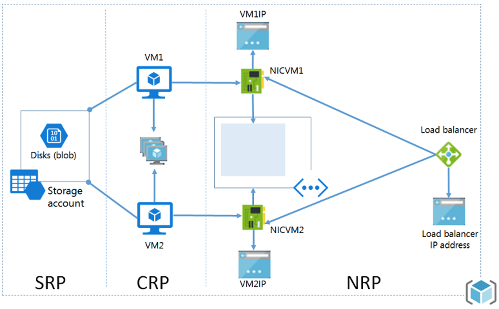
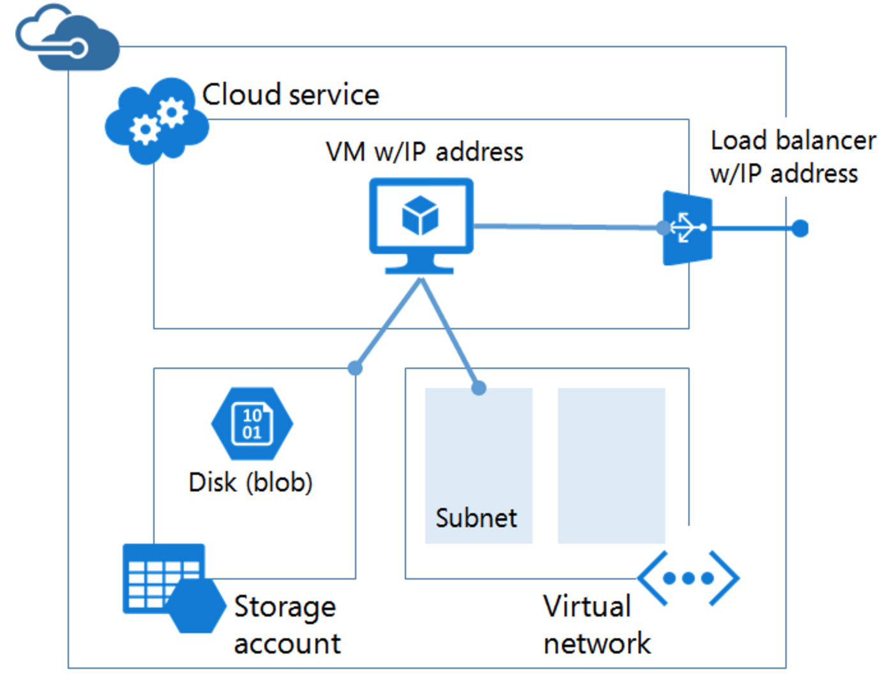

Azure经典模式和资源管理模式的区别
Table of Contents
1 历史
最开始一直都是classic模型，它的模型中有service的概念，所以它也叫 asm（Azure Service Manager）。2014年开始提出arm（Azure Resource Manager），其管理平台叫portal。2015年底arm发布。
当前情况是微软正在将azure的所有功能往arm上迁移。以后都推荐使用arm。但 是当前状况是arm不完全向后兼容asm，有些功能只有asm上才有，所以还有很多 用户还是在使用classic。
2 区别
- 两个模型使用不同的api实现。
- 这两个模型给用户提供是的两套不同的api集合。
- web管理界面的地址、UI不相同。
- 不完全兼容。
另外，Azure又分为Azure全球和Azure中国。对于我们来说，当前只需要Care微 软中国就可以了。
中国区Azure命令行登陆和登出应该这样：
azure login -e AzureChinaCloud
azure login -e AzureChinaCloud -u username@mail.com
azure logout username@mail.com
3 两种模型的架构图
3.1 arm

- 所有资源存在于一个资源组中。
- 虚拟机依赖在存储资源提供程序中定义的具体存储帐户，在 Blob 存储中存 储其磁盘（必需）。
- 虚拟机引用在网络资源提供程序中定义的具体 NIC（必需）和在计算资源提 供程序中定义的可用性集（可选）。
- NIC 引用虚拟机的指定 IP 地址（必需）、虚拟机的虚拟网络的子网（必需） 和网络安全组（可选）。虚拟网络内的子网引用网络安全组（可选）。
- 负载均衡器实例引用后端 IP 地址池，包括虚拟机的 NIC（可选），并引用 负载均衡器的公共或专用 IP 地址（可选）。
下面是一个具体的脚本例子，可以直观地看出它们之间的依赖关系：
# 创建资源组： azure group create TestRG -l chinaeast # 创建存储帐户： azure storage account create -g TestRG -l chinaeast --kind Storage --sku-name GRS pengsaccount # 创建虚拟网络： azure network vnet create -g TestRG -n TestVNet -a 192.168.0.0/16 -l chinaeast # 创建子网： azure network vnet subnet create -g TestRG -e TestVNet -n FrontEnd -a 192.168.1.0/24 # 创建一个公共 IP： azure network public-ip create -g TestRG -n TestLBPIP -l chinaeast -d testlb -a static -i 4 # 创建负载均衡器： azure network lb create -g TestRG -n TestLB -l chinaeast # 创建负载均衡器的前端 IP 池并关联公共 IP： azure network lb frontend-ip create -g TestRG -l TestLB -n TestFrontEndPool -i TestLBPIP # 创建负载均衡器的后端 IP 池： azure network lb address-pool create -g TestRG -l TestLB -n TestBackEndPool azure network lb inbound-nat-rule create -g TestRG -l TestLB -n TEST1-SSH -p tcp -f 4991 -b 20160 azure network nic create -g TestRG -n TEST-NIC1 -l chinaeast --subnet-vnet-name TestVNet --subnet-name FrontEnd \ -d "/subscriptions/5ef4723b-155a-4081-9dc5-d41c9a0130ab/resourceGroups/TestRG/providers/Microsoft.Network/loadBalancers/TestLB/backendAddressPools/TestBackEndPool" \ -e "/subscriptions/5ef4723b-155a-4081-9dc5-d41c9a0130ab/resourceGroups/TestRG/providers/Microsoft.Network/loadBalancers/TestLB/inboundNatRules/TEST1-SSH" azure vm create \ --resource-group TestRG \ --name RasMasterVm \ --location chinaeast \ --os-type linux \ --availset-name TestAvailSet \ --nic-name TEST-NIC1 \ --vnet-name TestVnet \ --vnet-subnet-name FrontEnd \ --storage-account-name pengsaccount \ --admin-password 'password' \ -Q "https://pengsaccount.blob.core.chinacloudapi.cn/system/Microsoft.Compute/Images/vhds/rivertest1-osDisk.2d0ec9d8-7b65-47cb-8dbd-45ba6c0dadfe.vhd" \ --admin-username username
3.2 asm

- 一项必不可少的云服务，用作宿主虚拟机的容器（计算）。虚拟机自动配备 一个网络接口卡 (NIC) 以及由 Azure 分配的 IP 地址。此外，云服务包含 一个外部负载均衡器实例、一个公共 IP 地址以及若干默认终结点，以支持 远程桌面、针对 Windows 虚拟机的远程 PowerShell 流量和针对 Linux 虚 拟机的 Secure Shell (SSH) 流量。
- 一个必不可少的存储帐户，存储虚拟机的 VHD，包括操作系统、临时文件和 附加的数据磁盘（存储）。
- 一个可选的虚拟网络，用作额外的容器，可以在其中创建子网结构并指定虚 拟机所在的子网（网络）。
3.3 总结
最开始的时候，asm使用service的模型，提出的是是一个cloud service “云服务”的概念。一个云服务包含虚拟机、ip地址等。其它比如网络，NSG （Network security group，网络安全组，其实就是防火墙）等东西。这些 东西在asm中都是独立的。另外，例如load balance这样的设备，在asm中是 隐式地创建的。
而在arm中，它把虚拟机，public ip，vNet，subnet，nsg等都描述为资源 （resource），而且这些相关联的资源都打包成了一个“组”，就成了”资 源组“。在”资源组“中，arm把一些asm中隐式创建的设备都做成了”资源 “（比如public ip，load balance这些）。arm这样做，一个资源组做为整 体，增删方便。而把所有设备独立成资源，可配置性也更高。
难道真的是两套pm？
4 arm的优点
- classic的每个资源都是独立的。arm可以以一个组的概念来部署、管理和监 控所有的服务。
- arm可以方便地重复布署用户的解决方案，同时还能保证其布署后的一致性。
- arm可以对资源组中的所有资源做访问控制，对应策略对后面新加入的资源也生
效。arm的访问制控有三种基本权限。
- owner：所有权限。
- contributor：有创建和管理资源的权限，但是不是付予别人访问权限。
- reader：只读。
- arm可以给用户的任何资源打tag，提供逻辑上组织资源的能力。
- 可以使用资源模版（json）来定义解决方案的架构。支持导入导出功能。模 版定义了一组资源的集合，可以一次性布署。
- 可以定义各资源之间的依赖关系，使其按正确的顺序进行部署。
5 相应资源可能出现几种情况
- 只支持arm。
- 两个都支持如虚拟机、存储帐户和虚拟网络。
- 只支持classic。
第一种只能使用arm来进行操作，第三种只能使用classic来进行操作。第二种， 使用arm创建的资源只能使用arm来操作，使用classic创建的资源只能使用 classic来操作。因为这些资源在两种平台上支持的操作不同（使用的api集合 应该都不同）。
6 一些具体不兼容的情况（后面持续补充）
- arm中可以支持一个NIC多个private ip和public ip地址。
- 两种模式下Ip Address的区别